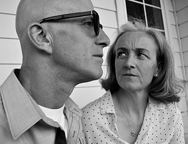
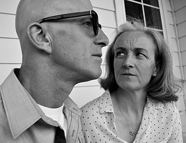

Consuming Plastic
Maya, 2019
This piece is a commentary on plastic use. By placing a plastic bag on my head, I eliminate the mindfulness connected to the body. It also suggests suffocation on the bag, which speaks to the death of animals caused by plastic pollution. I completed a 3-D scan of my body. For my modeling process of the bag, I started with a sphere. I extruded and pulled different vertexes, faces, and edges. Then, smoothed with a sculpting tool. I then placed the sculpted bag over the head of the 3D scanned model.

Juke
Adobe Illustrator, 2017
Juke is my twin brother's dog. I decided to participate in this popular trend of digital work to make a piece I knew my twin would enjoy. I began this project without much ambition, but it soon blossomed into a long-term process because of the amount of detail I decided to include. This piece is made entirely of triangles, ranging in size from almost unnoticeable within the collar, to larger face components, to the long, obtuse, triangles of the whiskers.
 

Approaching the Pearl Year
digital photography, 2018
This collection of photographs documents my parents as they approach 30 years of being married, the pearl year. I found inspiration in my parents for their ongoing dedication and sacrifice not only towards each other, but to their entire family. I chose to photograph them in a comfortable state, their home. To highlight my mother's beauty and bravery of being one-hundred percent natural, I photographed them up close and sharply.

Public Shame
Maya, 2019
Within this piece I explore the public shame women still receive around periods and menstrual cycles. I decided to change the texture of tampons, turning these applicators into gold and as a result glorifying their use. The red and blue pills represent the pain and bodily element during the sensitive time of a period while many women rely on some form of medicine to get themselves through it. Enclosed in a glass box, periods are the elephant in the room. The large clear box acts as a metaphor for this subject which lingers around most women, but can not be openly discussed or shared. After modeling every object from a basic polygon, I attached a specific texture to each item, making the gold shiny, pills multicolored, and glass transparent. I imagine this piece as a larger than life sculpture with the center tampon being over seven feet tall and the smallest pill being at least two feet in diameter.
SupercaliWorld
digital video, 2018
Using remixed music, quick cuts, and bright colors, I created an immersive video experience into the childish world of Mary Poppins. My interpretation experiments with the audible excitement throughout the "Supercalifragilisticexpialidocious" song and portrays that with the video montage.
MADE IN (NOT YOUR COUNTRY)
digital video, 2018
This video is a cultural critique on our society's consumerism and negligence towards the countries, factories, and people who manufacture this nation's material possessions. I filmed this footage while walking around a department store hunting for products made in the U.S.A. The ratio of locally versus internationally sourced goods is, as expected, disappointing. My idea to represent this fact is encapsulated throughout the video.
Run
Digital Video, html & css, 2018
In this netart project, I am exploring my early internet memory in which I watched my two older sisters play an online car game, titled "On The Run". It featured paved roads, a yellow car, cops, and damage on the driver; each of these features is represented with a page. I designed this website specifically to be visited on a cellphone, therefore it looks it's best on a small screen. This website has a start and finish as you move throughout the pages. It ends with the video on the final page with nothing else to click on.
Smoke
Digital Video, Photography, html & css, 2018
Within this project I indirectly guide the viewer through a series of web pages with both educational and emotional content about the recent fires in Northern California. My main design choice for this was to make it easily digestible and simple to navigate from page to page with only having one option to click the small icons on the top of each page. It combines my own photography and footage as well as other pieces I found. The video is made on the informative side while at the same time not unloading a bunch of facts on the viewer being silent and minimal in description.